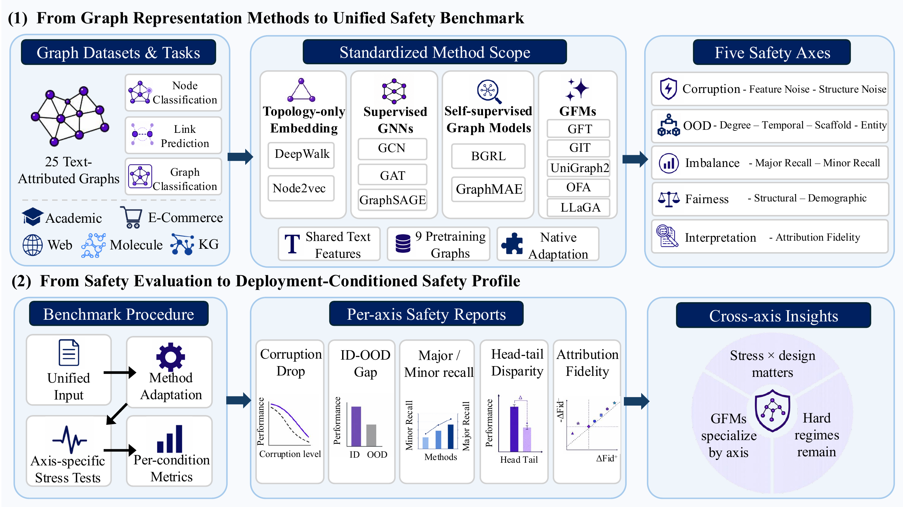

Xiaoguang Guo / 郭晓光
I am a Ph.D. candidate in Computer Science and Engineering at University of Connecticut (UConn), advised by Prof. Chuxu Zhang. My research focuses on Agentic Reinforcement Learning — I am interested in how to reliably train LLM-based agents that can plan, reason, and act over long horizons in complex interactive environments. I also work on graph learning, with a focus on robustness and safety.
Email: mca25001 [AT] uconn.edu
"Steak? That's mine." — Guagua"遇到困难睡大觉。" — 瓜瓜
News
➤ [2026-01] I was invited to serve as a PC member for PAKDD 2026.
➤ [2025-05] Joined Machine Intelligence and Data Science (MINDS) Lab at UConn!
Selected Publications
Full list on Google Scholar.

Xiaoguang Guo, Zehong Wang, Ziming Li, Shawn Spitzel, Soonwoo Kwon, Tianyi Ma, Yanfang Ye, Chuxu Zhang
arXiv preprint, 2026
We introduce GRL-Safety, a comprehensive benchmark that stress-tests twelve representative graph representation learning methods across five safety dimensions, exposing reliability gaps under deployment shifts in graph signals, contexts, label support, structural groups, and predictive evidence.

Xiaoguang Guo, Zehong Wang, Jiazheng Li, Shawn Spitzel, Qi Yang, Kaize Ding, Jundong Li, Chuxu Zhang
ACM SIGKDD Conference on Knowledge Discovery and Data Mining (KDD), 2026
We propose STEM-GNN, a pretrain-then-finetune framework that achieves a balanced fit–stability–generalization tradeoff for robust graph generalization under frozen deployment.
Services
Journal Reviewer:
ACM Transactions on Intelligent Systems and Technology (ACM TIST)
Transactions on Machine Learning Research (TMLR)
Data Mining and Knowledge Discovery (DMKD)
Conference Reviewer:
Pacific-Asia Conference on Knowledge Discovery and Data Mining (PAKDD 2026)
Resource-efficient Learning for the Web Conference (RelWeb@WWW/SIGKDD), 2025, 2026
Selected Awards
➤ NSF Access Grant, 2026.